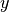
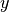

lieb_tb module¶
-
class
lieb_tb.latticeTB(tags, ri, pv)[source]¶ Bases:
objectThe class latticeTB build up a lattice.
-
class
lieb_tb.eigTB(coor, tags)[source]¶ Bases:
objectSolve the Tigh Binding eigenvalue problem of a lattice defined using the class latticeTB.
-
class
lieb_tb.eigLieb(coor, tags)[source]¶ Bases:
lieb_tb.eigTBChild of the class eigTB. Dedicated to the Lieb lattice.
-
get_hop_uni(t, c=0.0)[source]¶ Get the nearest hoppings of the Lieb lattice and set their values to
 and, get the next nearest hoppings (diagonal hoppings)
and set their values to
and, get the next nearest hoppings (diagonal hoppings)
and set their values to  .
.Parameters: - t – Nearest hopping value.
- c – Next nearest hopping strength.
-
get_hop_alt(ta, tb, tc, td, c=0.0)[source]¶ Get the nearest hoppings of the Lieb lattice with alternating hoppings and, the next nearest hoppings. As the next nearest hoppings are diagonal hoppings, the value of the diagonal between
 and
and  is given by
is given by
Parameters: - ta – Value of the math:t_{ab} hoppings.
- tb – Value of the math:t_{ba} hoppings.
- tc – Value of the math:t_{ac} hoppings.
- td – Value of the math:t_{ca} hoppings.
- c – Default value 0, strength of the diagonal hoppings.
-
get_hop_alt_nn(c)[source]¶ Get the next nearest hoppings if the Lieb lattice has alternating hoppings. Method used in get_hop_alt.
-
set_dim_defect(dim_x, dim_y, along_x=False, along_y=False)[source]¶ Set dimerization defects along
 and/or .
and/or .Parameters: - dim_x – Dimerization along site index.
- dim_x – Dimerization along site index.
- along_x – Default value False. Introduce a dimerization defect along .
- along_y – Default value False. Introduce a dimerization defect along .
- dim_x – Dimerization along
-
disorder_generic(alpha=0)[source]¶ Set a generic disorder.
Parameters: alpha – Default value 0. Stength of the disorder. Note
This disorder destroys the zero mode.
-
disorder_uniform(nx, ny, alpha=0)[source]¶ Set a disorder uniform along math:y for math:t_{ab} and math:t_{ba}, and uniform along math:x for math:t_{ac} and math:t_{ca}.
Parameters: alpha – Default value 0. Stength of the disorder. Note
This disorder preserves the zero mode.
-
disorder_pair(nx, ny, alpha=0)[source]¶ Set a non uniform disorder.
Parameters: alpha – Default value 0. Stength of the disorder. Note
This disorder preserves the zero mode.
-
-
class
lieb_tb.plotTB(coor, tags)[source]¶ Bases:
objectPlot the output of the class latticeTB and the class eigTB.
-
plt_lattice(hop=[], ms=30, lw=5, fs=20, numero=False, save=False)[source]¶ Parameters: - hop – Default value []. Hoppings given by the class eigTB. If not empty, plot the hoppings.
- ms – Default value 30. Markersize.
- lw – Default value 5. Linewidth of the hoppings.
- fs – Default value 20. Fontsize.
- numero – Default value True. Plot the numero associated to each site.
- save – Default value False. Save the figure.
-
plt_spec(en, pola=[], pola_tag='', ms=10, fs=20, save=False)[source]¶ Plot the spectrum (real part of the eigenenergies (blue circles), and the polarization on the A sublattice (red circles).
Parameters: - en – Eigenenergies.
- pola – Defaut value []. Output of the class eigTB.
- pola_tag – Tag of the sublattice.
- ms – Default value 10. Markersize.
- fs – Default value 20. Fontsize.
- save – Default value False. Save the figure.
-
plt_intensity(intensity, s=300, fs=20, add='', save=False)[source]¶ Plot the intensity of a state.
Parameters: - intensity – Intensity.
- s – Default value 300. Shape.
- fs – Default value 20. Font size.
- add – Default value ‘’. Give an additional file description.
- save – Default value False. Save the figure in the repertory given by the methop_nn dir_name with name given by the methop_nn file_name.
-
-
class
lieb_tb.propagationTB(coor, sites, steps, dz)[source]¶ Bases:
objectTime evolution.
-
get_prop(ham, psi_init, norm=True)[source]¶ Get the time evolution.
Parameters: - ham – Tight-Binding Hamilonian.
- psi_init – Initial state.
- norm – Default value True. Normalize the norm to 1 at each step.
-
-
lieb_tb.equations(p, param)[source]¶ Get the intersection of the points at the extremity of two segments. Used to build up the lattice in hopping space.
-
class
lieb_tb.saveFigTB(sys, hop, hop_tags, add, ext='png')[source]¶ Bases:
objectCreate a folder and save the figures obtained via plotTB
-
dir_name(add='')[source]¶ Get the name of the directory in which the figures are stored.
Parameters: add – String. First part of the directory name.
-
file_name()[source]¶ Create the last part of the file containing: the indices of the hopping defects (if any), the indices of the onsite enery defects (if any), the indices of the dimerization defects (if any), and the extension.
Parameters: add – String. First part of the file name. Returns: - name – Last part of the file name.
-